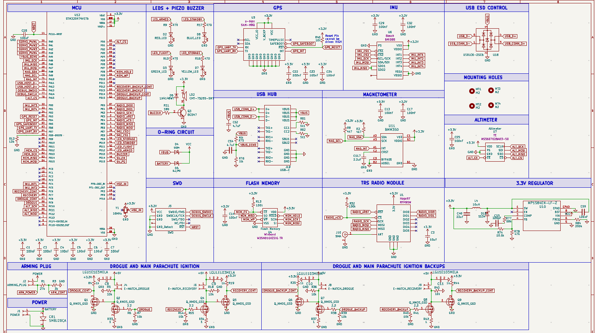

High-Altitude Avionics Flight Sensor (AFS)
This documentation serves as the technical Design Specification for the AFS v3.0 platform. The AFS is a high-performance flight computer optimized for collecting meteorological telemetry and managing dual-stage recovery ignition for high-altitude vehicles.
System Architecture
The board is centered around an STM32G474VET6 MCU, chosen specifically for its high-resolution PWM for servo control and several SPI/I2C buses for per sensor load and isolation.
Current Status: WIP
System Overview
The architecture follows a zone isolation design:
- Power Zone: High-current regulation and source arbitration.
- Control Zone: High-speed processing and logic.
- Sensor Zone: Low-noise analog and digital bus isolation.
- Recovery Zone: Isolated high-side power switching.
Interesting Component: High-Side MOSFET Ignition Logic
- Design Justification Standard low-side switching is common, but in a high power rocketry environment with carbon-fiber and metallic component, leaving pyrotechnics electrically hot provides unintentional paths to ground through the rocket's chassis. High-switching alternatively ensures that the e-match remains at 0v potentional during standby, preventing any accidental ground from triggering early recovery deploymen during assembly pre-flight.
- Operating Principle: This design utilizes a two stage MOSFET driver where an N-Channel FET (Q1) can act as gate driver for a high-current P-Channel Power FET (Q2).
- Safety: The circuit has a 10kΩ PD resistor to prevent accidental firing during MCU boot-up.
- Deep Dive: Detailed circuit analysis and continuity check logic can be found in the Recovery Systems page!
Ease of Use: Diode O-Ring Power Selector
- Design Choice: Power Handling The AFS is designed to be "plug-and-play" for the ground crew. One of the most common difficulties in the previous iteration of this board was power management during data offloading or firmware updates. The o-ring circuit aims to tackle the issue of manually switching between power sources during ground operations, automatically selecting whichever source is available.
- Feature: I implemented a Diode O-Ring circuit using Schottky barriers (D4, D5) to arbitrate between the 2S LiPo battery and USB-C VBUS as power. Having both
- Design Jusification: This updated circuitry automatically selects the highest voltage rail while preventing dangerous back-feeding into the USB port and removing the necessity for manual intervention.
- Technical Details: Full schematic & Schottky diode selection criteria are on the Power Distribution page.
- Note - Design Idea: The idea is derived from my experience as a Micromouse Co-Lead where we must iterate rapidly during competition. I turned on battery to my mouse and had usb in (w the 3v3 wire) and burned my 5v ldo. bleh.
Quick Reference Specs
- Dimensions: 40mm x 60mm with 4x M2 Mounting Holes for high-vibe environments.
- Sensors: Isolated I2C bus featuring the BMM350 Magnetometer.
- Regulation: 3.3V / 2A high-efficiency switching regulator. View Regulator Specs.
Full System Schematic

Figure 1: Complete AFS Schematic - currently in design phase